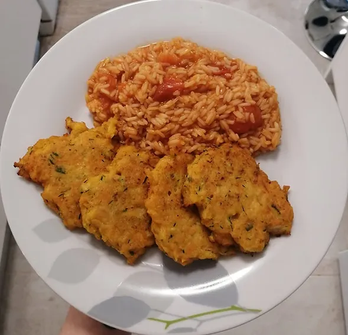

Pataniscas Vegetarianas
Tempo de preparação
7min
Horas de Cozimento
10min
Tempo Total
17min
Porções
10 pataniscas

Ingredientes
- ½ courgette ralada
- 1 cenoura ralada
- ½ cebola picada
- 1 dente de alho picado
- salsa picada q.b
- 1 copo de água
- farinha de milho q.b
- 3 csp de linhaça moída
- 1 cchá de fermento em pó
- 1 cchá de vinagre de sidra
- sal q.b
- pimenta preta q.b
- pimentão doce q.b
- óleo para fritar
Instruções
- Numa taça grande coloque a courgette, a cenoura, a cebola, o alho e a salsa picada. Tempere os legumes com sal, pimenta preta e pimentão doce.
- Adicione a linhaça moída e envolva bem. Junte o copo de água e coloque a farinha de milho até ficar uma massa cremosa mas consistente.
- Por cima da massa coloque o fermento em pó e logo de seguida o vinagre de sidra para abafar e formar uma reação de espuma. Mexa bem para incorporar a espuma criada.
- Aqueça uma frigideira antiaderente com um pouco de óleo, e frite as pataniscas formando-as com uma colher de sopa, durante cerca de 3-5 minutos ou até ficarem douradas dos dois lados.
- Sirva as pataniscas com um arroz de tomate malandro e uma salada de pepino!